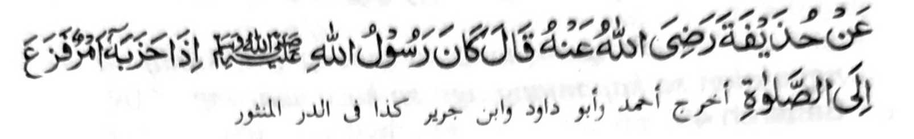
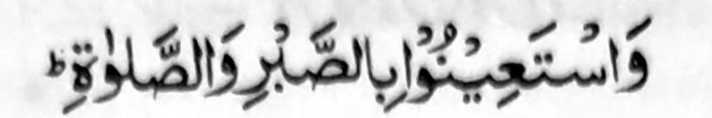
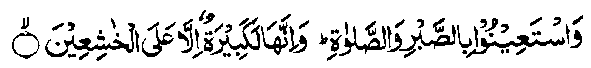
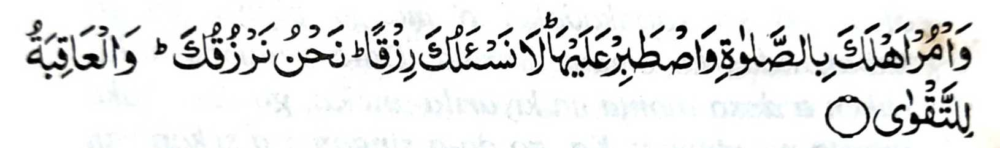
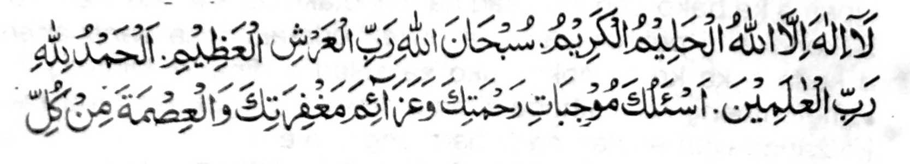
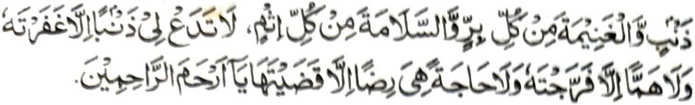
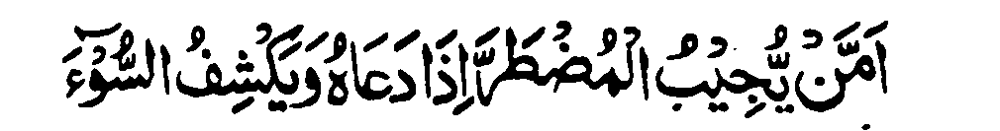

Miyaka thitayan ko Hudaifah (Radhiallaho 'Anho) a pitharo iyan, "Aya ola-ola o Rasulollah (Sallallaho 'Alaihi Wasallam) igira adena mini-awida akal iyan na pephamakot zambayang. "
So Sambayang na mala a limo o Allah. So kapamakot zambayang ko masa a kamboko na giyoto den i gi-i kapamakot somong ko limo Iyan, go amay ka maka-oma so Limo o Allah, na daden pen a malamba a boko a maito bo. Tanto a madakel a manga tothol pantag sangka-iya ola-ola o Rasulollah (Sallallaho 'Alaihi Wasallam). Lagidoto mambo so ola-ola o manga Sahabah niyan, a siran so somiyongkadon taman ko miyakaito-ito a ola-ola. So Abu Darda (Radhiallaho 'Anho) na pitharo iyan, "lgira mabager a samber o 'undo', na so Rasulollah (Sallallaho 'Alaihi Wasallam) na gi-i mamakot somoled sa Masjid sa diro-o den mawa taman sa di lomengen so 'undo'. Sakamaoto igira mimbarahana so alongan odi na so olan, na so Rasulollah (Sallallaho 'Alaihi Wasallam) na pephamakot zambayang." So Sohaib (Radhiallaho 'Anho) na piyakitokawan non o Rasulollah (Sallallaho 'Alaihi Wasallam) a so langono miyaona a manga Sogo o Allah (Alaihimos Salaam) na gi-i siran mambo mamakot Zambayang si-i ko manga reregen a mao-ola-ola.
Miyaka isa na so Ibn Abbas (Radhiallaho 'Anho) na zisi-i sa lakawan. Si-i ko kaphelalakaw niyan na kiyatokawan niyan so kiyapatay o wata iyan a mama. Tomipad ko anta niyan na mizambayang sa dowa ka raka'at, go miyamangeni sekaniyan kagiya Tashahhud sa tanto a matas. Oriyan niyan na pitharo iyan so Inna lillahi wa inn a ilaihi ra-jeun go taros a pitharo iyan, "Pinggola-ola ko so inipaliyogat reketano o Allah si-i ko Soti a Kitab Iyan, ma-ana:

"Na Pangeni kano sa tabang (ko Allah) sa nggolalan sa kapantang ago so kazambayang..." [Al-Baqarah:45].
Aden pen a lagida-i a tothol rekaniyan Zi-si-i sekaniyan sa lakawan ko kiyanega niyan ko kiyapatayo pagari niyan a Qusum. Tomipad sekaniyan ko onta niyan ko kilid a lalan na go miyamangeni sekaniyan kagiya Tashahhud sa tanto a matas. Oriyan o kiyapakazambayang iyan na mikhoda bo ko onta niyan na biyatiya iyan angka iya Ayaat sa Qur'an:

"Na Pangeni kano sa tabang (ko Allah) sa nggolalan sa kapantang ago so kazambayang. Na mata-an naya a thitho a maregen inonta bo ko khipangangalimbaba-an " [Al-Baqarah:45].
Aden pen a isa tothol rekaniyan. Si-i ko kiyanega niyan ko kiyawapat o isa ko manga karoma o Rasulollah (Sallallaho 'Alaihi Wasallam), na tomiyalagepha sekaniyan somodod. Kagiya adena miza-on o antona-ai sabap na pitharo iyan, "So pekhababaya-an nami a Nabi (Sallallaho 'Alaihi Wasallam) na inisogo iyan rekami so kasodod si-i ko Sambayang igira adena miyakaoma a tiyoba. Antona-a pen a tiyoba a makalawan ko kiyawapat o Ummul Momineen (a karoma o Rasulollah).
Si-i ko masa a kakhateped o niyawa o Abada (Radhiallaho ’Anho), na pitharo iyan ko manga tao a lomilibeton, "Izapar aken ko isa odi na langon niyo so kagora-oka raken. Anda den i kada o niyawa ko na pamagabedas kano ko manga okit iyan na song kano sa Masjid na pamangeni nako niyo sa rila, sabap sa so Allah a Makalimo-on na inipaliyogat Iyan reketano so kapamangeni sa tabang (ko Allah) nggolalan sa kazabar ago Sambayang. Oriyan noto na lebengen niyo den. So Nadhr (Radhiallaho ’Anho) na piyanothol iyan, "Miyaka isa na tanto a lominiboteng si-i ko kadaon-dao sa Madina. Minggaga-an ako somong ko Anas (Radhiallaho 'Anho) ka thokaon ko o ba aden a kiyasagadan niyan a lagida-i si-i ko masa o Rasulollah (Sallallaho 'Alaihi Wasallam). Pitharo iyan raken, 'Maazallah! Sangkoto a inika-limo a manga gawi-i, na apiyabo igira miyakabager so samber a 'undo', na pephamakot kami somong sa Masjid ka amay-amay na bagiyoto so bangkit."'
So Abdullah bin Salam (Radhiallaho 'Anho) na pinanothol iyan a igira aden ko ta-alok o Rasulollah (Sallallaho 'Alaihi Wasallam) a makasasagad sa tanto a maregen na ipephaliyogat iyan kiran so kazambayang, sa pembatiya-an niyan kiran angka-iya a Ayaat sa Qur'an:

"Go sogo-on ka ko manga ta-alok reka so Sambayang go phantang ka si-i Rekaniyan. di Kami reka phangeni sa pageper. Sekami-i pephageper reka. Na so khabolosan (a mapiya) na bagi-an o Manananggila. ” [Soorah Ta Ha: 132]
Miya-aloy sa Hadith a igira aden a kiyaregen nan pantag ko kamapiya-an niyan sa Donya odi na si-i ko Akhirat. odi na makapantag ko Allah odi na so manga ka-aden Niyan, na pagabedas phiya-piya, na zambayang sa dowa ka rak-at, phodi-podiya niyan so Allah, 'go salawati niyan so Nabi (Sallallaho 'Alaihi Wasallam), na oriyan niyan na indowa-a niyan angka-iya a dowa-a:


Da-a Tohan a zimba-an inonta bo so Allah a Manapi a Malimo, Soti so Allah a Kadnan o Arsh a Mala, So Podi na langon rek o Allah a Kadnan o langono Aalam. Phangening ko Reka so (Amal) a khaparoh niyan so Limo-oKa, go phakapatot ko Rila-aKa, go so kapakadakel o manga pipiya go so kapakalidas ko omani marata. Da-a pelamba-anKa raken a dosa inonta na kiyarila-aneKa, go da-a boko inonta na piyapas Ka, go da-a singanin a sekaniyan na ikasoso-at ka na inonta na pipharongKa, Hay Pephangalimo ko langono makalimo- on.
So Wahhab bin Munabbah na inisorat iyan, "Ba aden a singanin niyo a inibegay rekano o Allah a minggolalan ko Sambayang? lsako miyanga-oona a mapiya masa, na igira aden a tiyoba a minisogat ko manga tao, na pephamakot siran Zambayang." Miya-aloy a si-i sa Koofah na aden a tometembeng a lomalangkap so kaontol iyan. So manga tao na ipezarig iranon so manga ala-i arga a manga tamok iran go so manga pirak iran, a phagawidan iyan pho-on ko isa a inged taman ko ika dowa a inged. Miya ka isa na aden a isasarig rekaniyan a tamok a aawidan niyan na biyalak sekaniyan a sakatao a mama ago iniza-an niyan o anda pagantap angkoto a tometembeng. So kiya tharo-aon angkoto a tometembeng ko zongowan niyan na pitharo o mama, "San ako mambo zong. Opama ka bako den khalalag na monotako reka a phelalagako. Bakongka di pekhapiya-ani a pakakhoda-akongka sangkanan a koda a ka ka somokay ako sa salad a dinar?" Miniyog so tometembeng na mikhoda siran a dowa. So kiyapaka-oma iran ko zanga-iyan a lalan na pitharo angkoto a mama, "Imanto, na anda ka pagokit sangka-iya dowa lalan?' Pitharo o tometembeng, "Giyangka-iya malaon a lalan." Pitharo o mama,"Dika san pagokit pagaria. Si-i ta mokit sangka-iya a isa a lalan ka maga-an ago aden pen a manga otanon a khakan angka iya koda aka". Pitharo o tometembeng, "Da ko si-i den maka okit" Pitharo o mama, "Ogaid na lalayon ako si-i phagokit piyaratiyaya sekaniyan o tometembeng na ro-o niyan pinipay so koda iyan. Da siran kawatani na, miyapos so lalan ko rindib a kalasan a adena a mitatayakon a manga tolan a tao. Sakadiyap na tominipho so mama na minindas sa gelat kam bono-on niyan so tometembeng. "Apai ngka pasin," inilalis o tometembeng, "Kowa-angka den angka iya koda go so langon o roran niyan, asar a diyakongka bono-on." Da sekaniyan pamakinega o mama sa mizapa kam bono-on niyan mona angkoto a tometembeng na oriyan niyan na khowa-an niyan so koda rakhes o roran niyan. So kiya ilayaon o tometembeng sa so pangeni niyan na da maparo ago da katago-i sa kapedi so mategas a poso o mama, na pitharo o tometembeng, "O bakongkam bono-a na pakazambayang akongka sa dowa bo ka raka-at." Miniyog so mama sa pitharo iyan, "Panamar kaden zambayang. Langon angka iya pekhailaingka a manga tolan na lagidanan a piyangeniran raken, ogaid na da-a minitabang kiran o sambayang iran." Mipho-on zambayang so tometembeng, ogaid na da-a khatademan niyan a izakeb iyan ko Fatihah, minsan pen piyanama-namaran niyan. So mama na kiyangetan sa pitharo iyan ko tometembeng ang-gaga-an zambayang. Da mathay na giyangka-iya Ayaat na miyapikir iyan:

"Ba (di aya lebi a mapiya) so Pezembag ko kareregenan, igira miyangeni ron, go pephokas ko marata... [Soorah An-Naml:62]
So tometembeng na pethoron so manga lo' iya. ko manga mata niyan ko
masa a kapembatiya-an niyan sangka-iya Ayaat, na miyaka tindeg a sakatao
a komokoda. Somosolot sekaniyan sa raben a matiyaya ago ma-awid sa
bangkao. Biyangkawan niyan so mama a taros a biyono iyan. So apoy na
miyaka poon ko kabebetaden ko lawas o mama. Somiyodod so tometembeng sa
piyanalamatan niyan so Allah. So kiyapaka pasad
Mata-an a so Sambayang na mala a tamok. Liyopen ko kapekhaso-aton o Allah na mapephakalidas ta niyan ko manga tiyoba sangkaiya masa ta sa donya, go pekhabegan ta niyan sa kalilintad ago kathatana o pamikiran. So Ibn Sirin na inisorat iyan, "Opama ka bako den pakapethomo-a ko Sorga ago so Sambayang a dowa rak'at, na tomo-onaken so Sambayang. Aya sabap iyan na tanto a maliwanag. So Sorga na para ko kasoso-at aken na so Sambayang na para ko kasoso-at o Kadnan ko." So Nabi (Sallallaho 'Alaihi Wasallam) na miyatharo iyan (Mafhom), 'Tanto a piyakasigi-sigi so bagi-an o sakatao a Muslim a maito-i bayadan, aya mala a tamok iyan na so Sambayang, go masoso-at ko maito a kawiyagan niyan ko tenday o kapephagintao niyan, go sinimba niyan so Kadnan niyan ko okit a kapangongonotan, go miyagintao sa da-a bantogan non ago miyatay sa tanto a kangoda-an, a maito a minibagak iyan ago maito a mimboko on." Si-i ko isa a Hadith, na miyapanothol a miyatharo o Rasulollah (Sallallaho 'Alaihi Wasallam), "Zambayang kano ko manga walay niyo oman-oman, ka aden kasabapi sa kadalemiron sa mapiya phoon sa Gagao ago Limo o Allah.